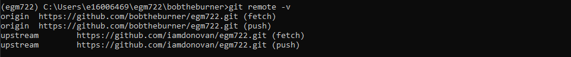

vector data using shapely and geopandas
Contents
vector data using shapely and geopandas#
In this practical, you’ll gain some more experience working with vector data in python. You will learn about the different vector data types available in the shapely package, and how we can use the geopandas package to perform different vector data operations and analyses.
The practical this week is provided as a Jupyter Notebook, where you can interactively work through the different steps of plotting the data. There is a second file, exercise_script.py, which you can modify to perform additional analyses, based on what you’ve learned in the Jupyter Notebook and the mapping exercise in Practical 2.
Note
In the main folder, you should also see an example script, week3_example.py. Be sure to try out the exercise, and see if you can’t figure out a solution on your own, before having a look at the (one of many possible) solution offered there.
Getting Started#
Last week, we saw how we can use GitHub Desktop to merge two branches (in this case, week2 into main).
This week, we’re going to see how to do this using the command line.
To get started with this week’s practical, open Anaconda Navigator, then launch the Command Prompt - either from Anaconda Navigator (make sure that your egm722 environment is selected), or from the Start Menu.
When the Command Prompt opens, navigate to your repository folder using cd, then type dir and press Enter.
You should see something similar to the following:

Switch to the week3 branch by typing:
git checkout week3
and pressing Enter.
Note
If you see some version of the following:
hint: If you meant to check out a remote tracking branch on, e.g., 'origin',
hint: you can do so by fully qualifying the name with the --track option:
hint:
hint: git checkout --track origin/<name>
hint:
hint: If you'd like to always have checkouts of an ambiguous <name> prefer
hint: one remote, e.g. the 'origin' remote, consider setting
hint: checkout.defaultRemote=origin in your config
What this is telling you is that you either have to explicitly specify which remote branch
you want to check out (e.g., origin or upstream), or you should set your
defaultRemote option using git config:
git config --global checkout.defaultRemote origin
Next, type dir and press Enter again. You should now see this:

To merge the week3 branch of our repository into main, we’ll use git from the command line.
Remember that at the start of last week’s practical, we discussed the difference between local, origin, and upstream branches:
local branches are the ones stored locally on your computer,
origin branches are the branches of your repository stored on GitHub,
upstream branches are the branches of the repository that you forked the egm722 repository from (https://github.com/iamdonovan/egm722).
Sometimes, there may be changes to the upstream repository that we want to integrate into our local version of a
repository. For example, for this module I may have added an additional exercise to the practical in one week, and you
want to make sure that you have this before you merge that week’s branch into the main branch.
To be able to keep track of the upstream changes, we need to make sure that our local repository knows where the upstream repository is. First, double-check what remote (not local) repositories git is keeping track of by typing the following at the command line:
git remote -v
This will list the remote repositories, and their nicknames. You should see an output like this:
{kind=link}
Note
If you only see origin, then we need to add the upstream remote location using git remote add:
git remote add upstream https://github.com/iamdonovan/egm722.git
This adds the URL for the upstream repository (https://github.com/iamdonovan/egm722.git) to our local
configuration. You can check that this worked by typing git remote -v again - you should now see two lines
for the upstream repository, as above.
Now, we can tell git to specifically pull the upstream version of a particular branch:
git pull upstream <branch>
This will pull (fetch and merge) the upstream version of <branch> (if it exists) into the local version of the current branch.
For example, git pull upstream week3 would merge the upstream week3 branch into our current branch (week3).
Go ahead and enter this command now:
git pull upstream week3
You should see the following output:

This indicates that there’s been no change to the upstream branch that isn’t already in our origin branch,
so we can safely merge the local main and week3 branches.
Now, switch back to the main branch:
git checkout main
And enter the following command:
git merge week3
You should now see the following output in the window:

This tells us what files have been changed (18 files) and how (854 insertions(+)). Because none the files
in the Week3 folder were present in the main branch, we’ll only see additions/insertions. As you work on your
project and commit changes to existing files, you’ll also see deletions (lines that are deleted or changed).
You should also see Weeks 1–3 in your repository folder:
{kind=link}
The last thing to do now is to push these changes to your GitHub repository:
git push
You can confirm that the changes are now on your remote repository by heading over to GitHub:

At this point, you can launch Jupyter Notebooks as you have in the previous weeks, and begin to work through the
practical exercise.
Next steps#
Once you have finished the notebook and the exercise, make sure to send me an e-mail with some ideas for your coding project. They do not have to be completely fleshed out, but you should try to have a general idea of what you would like to work on for the final project – ideally, this will be something related to your work, or a potential MSc thesis topic.
Note
Below this point is the non-interactive text of the notebook. To actually run the notebook, you’ll need to follow the instructions above to open the notebook and run it on your own computer!
Rachel McAdams#
Overview#
Up to now, you have gained some experience working with basic features of python, and used cartopy and matplotlib to create a map. In each of these practicals, you have loaded different vector datasets using a module called geopandas. In this week’s practical, we’ll be looking at working vector data in a bit more depth, including the different geometry types available using shapely, analyses like spatial joins and summarizing based on attributes, and how to reproject vector data from one coordinate reference system to another.
Objectives#
Gain experience working with different vector data types using shapely
Use geopandas to re-project vector datasets from one coordinate reference system to another
Summarize features using the groupby method of a GeoDataFrame
Learn how to perform different vector data operations using geopandas and shapely
Data provided#
In the data_files folder, you should have the following:
NI_roads.shp, a shapefile of roads in Northern Ireland
Counties.shp, a shapefile of county outlines for Northern Ireland
NI_Wards.shp, a shapefile of electoral wards for Northern Ireland
1. Getting started#
In this practical, we’ll be working with vector data. As a quick refresher, the three main types of vector data that we will work with are:
Point: point data represent a single point in space. For our purposes, points are either two-dimensional (x, y) or three-dimensional (x, y, z). In shapely, the corresponding class of data is a Point.
Line: lines are a sequence of at least two points that are joined together. In shapely, the corresponding class of data is known as a LineString.
Polygon: polygons are a sequence of at least three points that are connected to form a ring, as well as any additional rings that represent holes in the polygon. In shapely, the corresponding class of data is a Polygon.
We can also have Collections of vector data, where each feature represents a collection of Point, Line, or Polygon objects. In shapely, these are represented as MultiPoint, MultiLineString, or MultiPolygon objects.
To get started, run the following cell to import geopandas and shapely.
# this lets us use the figures interactively
%matplotlib inline
import pandas as pd
import geopandas as gpd
from shapely.geometry import Point, LineString, Polygon
2. Shapely geometry types#
2.1 Points#
As we saw in Week 1, to create a Point, we pass x, y (and optionally, z) coordinates to the Point class constructor:
pt = Point(-6.677, 55.150) # creates a 2d point with coordinates -6.677, 55.150
pt2 = Point(-6.658, 55.213) # creates a 2d point with coordinates -6.658, 55.213
pt3d = Point(86.925278, 27.988056, 8848.86) # creates a 3d point
print(pt) # print a well-known text (WKT) representation of the Point object
The last line, print(pt), prints a
well-known-text
(WKT) representation of the Point object. WKT is a standard
representation of vector geometry objects - most python libraries
and GIS softwares are able to read and/or translate WKT into other
formats, such as ESRI Shapefiles, GeoJSON, etc.
Remember that in python, we can find the attributes and methods for an
object by looking up the documentation (for shapely, this can be found
here), or
using the built-in function dir(). To find out more about a
particular function, we can use the built-in function help() (or, in
jupyter notebooks/ipython, the ? operator).
As an example, let’s use the built-in function dir() to look at the
methods and attributes associated with the Point class:
In [1]: print(dir(pt))
['__and__', '__array_interface__', '__bool__', '__class__', '__del__', '__delattr__', '__dict__', '__dir__', '__doc__', '__eq__', '__format__', '__ge__', '__geo_interface__', '__geom__', '__getattribute__', '__gt__', '__hash__', '__init__', '__init_subclass__', '__le__', '__lt__', '__module__', '__ne__', '__new__', '__nonzero__', '__or__', '__p__', '__reduce__', '__reduce_ex__', '__repr__', '__setattr__', '__setstate__', '__sizeof__', '__str__', '__sub__', '__subclasshook__', '__weakref__', '__xor__', '_crs', '_ctypes_data', '_geom', '_get_coords', '_is_empty', '_lgeos', '_ndim', '_other_owned', '_repr_svg_', '_set_coords', 'almost_equals', 'area', 'array_interface', 'array_interface_base', 'boundary', 'bounds', 'buffer', 'centroid', 'contains', 'convex_hull', 'coords', 'covers', 'crosses', 'ctypes', 'difference', 'disjoint', 'distance', 'empty', 'envelope', 'equals', 'equals_exact', 'geom_type', 'geometryType', 'has_z', 'hausdorff_distance', 'impl', 'interpolate', 'intersection', 'intersects', 'is_closed', 'is_empty', 'is_ring', 'is_simple', 'is_valid', 'length', 'minimum_clearance', 'minimum_rotated_rectangle', 'overlaps', 'project', 'relate', 'relate_pattern', 'representative_point', 'simplify', 'svg', 'symmetric_difference', 'to_wkb', 'to_wkt', 'touches', 'type', 'union', 'within', 'wkb', 'wkb_hex', 'wkt', 'x', 'xy', 'y', 'z']
Here, in addition to the special or magic methods (denoted with
__ at the beginning and end of the method name), there are a number of
methods that we might find useful, including Point.distance(). To
see what this method does, we can use help(Point.distance):
In [2]: help(Point.distance)
Help on method distance in module shapely.geometry.base:
distance(other) method of shapely.geometry.point.Point instance
Unitless distance to other geometry (float)
So, Point.distance() provides the distance from the point object to
some other geometry. Because shapely does not directly deal with
coordinate systems, this distance is unitless. This means that we
have to make sure that the two objects have the same reference system -
if we do not, the distance returned will not make sense. We will cover
working with coordinate reference systems later on in the practical.
Use the cell below to work out how we can access the x, y coordinates of a Point object. Can you see more than one way to do this? If so, are there differences between them?
# write your method to access the x,y coordinates of pt here
One of the common operations we might want to do with a Point object is
to create a buffer around the point. In the list of associated
methods and attributes of Point objects above, you should see there is a
method called buffer. A look at the help for this method:
In [3]: help(Point.buffer)
Help on method buffer in module shapely.geometry.base:
buffer(distance, resolution=16, quadsegs=None, cap_style=1, join_style=1, mitre_limit=5.0, single_sided=False) method of shapely.geometry.point.Point instance
Get a geometry that represents all points within a distance
of this geometry.
A positive distance produces a dilation, a negative distance an
erosion. A very small or zero distance may sometimes be used to
"tidy" a polygon.
Parameters
----------
distance : float
The distance to buffer around the object.
resolution : int, optional
The resolution of the buffer around each vertex of the
object.
...
shows that buffer takes a positional parameter of distance, as
well as a number of keyword parameters that determine how the buffer
operation is done. Remember that the buffer distance will be in the same
coordinate system as our point - shapely does not, by itself, do any
conversion between coordinate systems or units.
Note that the object returned by buffer is a Polygon, rather than a point - this makes sense, as the buffer is a two-dimensional surface around the point location.
pt_buffer = pt.buffer(0.001) # buffer the point by 0.001 in the same coordinates
print(type(pt_buffer))
2.2. LineStrings#
Instead of using a single x, y coordinate pair, a LineString object takes either a list of Point objects, or a list of coordinate tuples:
line1 = LineString([pt, pt2]) # method one of creating a LineString, using a list of Point objects
line2 = LineString([(-6.677, 55.150), (-6.658, 55.213)]) # method two, using a list of coordinate tuples
print(line1)
print(line2)
line1.equals(line2) # check to see if these are the same geometry
The coordinates of a LineString are stored as a tuple in an attribute called xy. The tuple has two items representing the X and Y coordinate values. If we want the x and y coordinates as separate variables, we can access them using their respective indices:
In [4]: x = line1.xy[0]
In [5]: y = line1.xy[1]
We can also combine this using tuple assignment, or unpacking, which assigns values from a tuple on the right-hand side of the assignment to a comma-separated grouping of variables on the left-hand side:
x, y = line1.xy
print(x)
print(y)
LineString objects have a number of the same methods that Point
objects do, including buffer and distance. LineString
objects also have a length (just like with distance, it is
unitless):
print(line1.length)
We can also find the centroid (center) of the LineString:
center = line1.centroid # get the centerpoint of the line
print(center)
The last two methods of LineString objects that we will explore for
now are project and interpolate:
In [6]: help(LineString.project)
Help on function project in module shapely.geometry.base:
project(self, other, normalized=False)
Returns the distance along this geometry to a point nearest the
specified point
If the normalized arg is True, return the distance normalized to the
length of the linear geometry.
So project returns the distance along the LineString that comes
closest to the Point (or other object). interpolate, on the
other hand, does something a bit different:
In [7]: help(LineString.interpolate)
Help on function interpolate in module shapely.geometry.base:
interpolate(self, distance, normalized=False)
Return a point at the specified distance along a linear geometry
Negative length values are taken as measured in the reverse
direction from the end of the geometry. Out-of-range index
values are handled by clamping them to the valid range of values.
If the normalized arg is True, the distance will be interpreted as a
fraction of the geometry's length.
it returns the point along the line at a specified distance; the
distance can be in the units of the LineString’s coordinates
(normalized=False), or it can be as a fraction of the total length
of the LineString (normalized=True).
line1.project(center) / line1.length # check to see how far along the line our centerpoint is
print(center) # print the WKT representation of the center point
print(line1.interpolate(0.5, normalized=True)) # print the WKT representation of the point 50% along the line
2.3. Polygons#
The last basic geometry type we will look at in this practical are Polygon objects. Similar to LineString objects, we can create a Polygon object using a list of coordinate pairs, or a list of Point objects:
poly1 = Polygon([(-6.677, 55.150), (-6.658, 55.213), (-6.722, 55.189)])
poly2 = Polygon([pt, pt2, Point(-6.722, 55.189)])
print(poly1) # print a wkt representation of the polygon
print(poly2)
print(poly1.equals(poly2))
Note that even though we only passed three Point objects (or coordinate pairs) to the Polygon constructor, the Polygon has four vertices, with the first and last vertex being the same - this is because the Polygon exterior is closed. Note also the double parentheses - this is because a Polygon potentially has two sets of coordinates - the Shell, or exterior, and holes, or interiors. To create a Polygon with a hole in it, we would need to pass a list of coordinates that describe the holes:
polygon_with_hole = Polygon(shell=[(-6.677, 55.150), (-6.658, 55.213), (-6.722, 55.189)],
holes=[[(-6.684, 55.168), (-6.704, 55.187), (-6.672, 55.196)]]) # note the double brackets
print(polygon_with_hole)
Note the double brackets in the holes keyword argument:
holes=[[(-6.684, 55.168), (-6.704, 55.187), (-6.672, 55.196)]]
This is necessary, because holes is expecting a sequence of
coordinate sequences that describe the holes - effectively, a list of
Polygon shells.
Accessing the coordinates of a Polygon object is a little more complicated than it is for Point and LineString objects - this is because Polygon objects have two sets of coordinates, the exterior (shell) and interior (holes).
But, the exterior attribute of the Polygon is just a
LinearRing (a special case of LineString where the first and
last coordinates are the same), and the interiors attribute is an
InteriorRingSequence (basically, a collection of LinearRings
that have to obey additional
rules):
print(polygon_with_hole.exterior) # this is a single LinearRing
for lr in polygon_with_hole.interiors: # this is potentially multiple LinearRing objects
print(lr)
Polygon objects have nonzero area and non-zero length
(perimeter) - as with the equivalent attributes for Point and
LineString objects, these are unitless. Polygon objects also
have a centroid, and we can bound the geometry using either the
minimum bounding box parallel to the coordinate axes (envelope), or
a rotated minimum bounding box (minimum_rotated_rectangle):
print('perimeter: ', poly1.length) # print the perimeter
print('area: ', poly1.area) # print the area
print('centroid: ', poly1.centroid) # get the centerpoint of the rectangle
print('bounding coordinates: ', poly1.bounds) # get the minimum x, minimum y, maximum x, maximum y coordinates
print('bounding box: ', poly1.envelope) # get the minimum bounding rectangle of the polygon, parallel to the coordinate axes
print('rotated bounding box: ', poly1.minimum_rotated_rectangle) # get the smallest possible rectangle that covers the polygon
There are a number of additional methods that we will cover more as we continue through the practicals - for now, this should be enough to give an idea for how these geometry objects work.
2.4 Interactions between geometry objects#
shapely also provides a number of methods that we can use to check
the spatial relationship between different objects. For example, the
following code shows how we can use the contains
method
of a shapely geometry object to see whether a Point (or other
geometry) is located fully within the object:
poly = Polygon([(0, 0), (2, 0), (2, 3), (0, 3)])
pt1 = Point(0, -0.1)
pt2 = Point(1, 1)
print(poly.contains(pt1))
print(poly.contains(pt2))
We can also check to see whether two geometry objects
intersect
using the intersects method. To actually get the intersection of the
two geometries, we use the intersection method, which returns the
geometry of the intersection (whether this is a Point, a
LineString, a Polygon, or a mixed collection of geometries
depends on the geometries and how they intersect):
line1 = LineString([(0, 0), (1, 1)])
line2 = LineString([(0, 1), (1, 0)])
print(line1.intersects(line2)) # intersects() returns True if the geometries touch/intersect/overlap, False otherwise
print(line1.intersects(poly))
print(line1.intersection(line2)) # if the geometries intersect, this will be the Point(s) of intersection
There are a number of other methods provided by shapely that we can
use to determine the relationship between geometry objects, including
touches, within, and overlaps. Have a look at the full list
from the shapely user
manual to see
the rest.
3. geopandas GeoDataFrames#
We have used geopandas in the past two practicals to read provided
shapefiles and work with the data they contain - in Practical 1, we
translated a comma-separated variable (CSV) file into a shapefile, and
in Practical 2, we read shapefile data and plotted it on a map using
cartopy.
This week, we will extend this introduction to look at how we can use geopandas to do various GIS analyses, such as spatial joins and clipping operations, as well as projecting from one coordinate reference system to another.
To begin, load the NI_roads dataset from the data_files folder and print the header (first 5 lines of the GeoDataFrame):
roads = gpd.read_file('data_files/NI_roads.shp')
print(roads.head())
So this dataset has three columns: SURVEY, Road_class, and geometry. Note that each of the geometries is a LineString object, which means that we are working with Line objects. Hopefully, given that the data are supposed to represent roads, this makes sense.
3.1 Coordinate reference systems using PROJ#
To start with, let’s see if we can figure out how many kilometers of
motorway are represented in the dataset - i.e., the sum of the length of
all of the LineString objects that have the attribute MOTORWAY.
First, Let’s check what the coordinate reference system (CRS) of our
GeoDataFrame is, using the crs attribute:
roads.crs
So this dataset has a Geographic coordinate reference system, EPSG:4326. EPSG codes (originally organized by the European Petroleum Survey Group) are a common way of working with coordinate reference systems. Each CRS in the EPSG registry has a unique code and standard well-known text representation.
The crs attribute of the GeoDataFrame is actually a
pyproj.CRS object.
pyproj is a python
interface to the PROJ library, which is a
software for transforming geospatial coordinates from one CRS to
another.
Each pyproj.CRS object provides a number of methods for converting
to different formats, including well-known text, EPSG codes, JavaScript
Object Notation (JSON), and PROJ string (i.e.,
'+proj=longlat +datum=WGS84 +no_defs +type=crs').
For example, to see the JSON representation of the CRS, we would use the
pyproj.CRS.to_json() method:
roads.crs.to_json() # show the representation of the CRS in JSON format
Because this is a Geographic CRS, the length information provided by
LineString.length will also be in geographic units, which doesn’t
really make sense for us - we first have to convert the GeoDataFrame
to a different CRS. To do this, we can use the method to_crs:
In [8]: help(roads.to_crs)
Help on method to_crs in module geopandas.geodataframe:
to_crs(crs=None, epsg=None, inplace=False) method of geopandas.geodataframe.GeoDataFrame instance
Transform geometries to a new coordinate reference system.
Transform all geometries in an active geometry column to a different coordinate
reference system. The crs attribute on the current GeoSeries must
be set. Either crs or epsg may be specified for output.
This method will transform all points in all objects. It has no notion
or projecting entire geometries. All segments joining points are
assumed to be lines in the current projection, not geodesics. Objects
crossing the dateline (or other projection boundary) will have
undesirable behavior.
...
So, to transform the GeoDataFrame to a different CRS, we have to
provide either a CRS or an EPSG code. We can also choose to do this in
place (inplace=True), or assign the output to a new GeoDataFrame
object (inplace=False). Let’s transform the GeoDataFrame to
Irish Transverse Mercator, and assign the output to a new variable,
roads_itm.
Rather than trying to find the correct JSON or PROJ representation of this CRS, we can instead use the EPSG code, which can be easier to work with.
Using the search function on the EPSG registry, or using an internet search, look up the EPSG code for the Irish Transverse Mercator CRS and enter it in the method call below:
roads_itm = roads.to_crs(epsg=XX) # replace XX with the correct EPSG code for Irish Transverse Mercator
print(roads_itm.head())
Note that only the geometry column has changed - instead of
geographic coordinates (e.g., (-6.21243, 54.48706)), the points in each
LineString should be in a projected CRS (e.g., (715821.764,
861315.722)). Now, when we access the length attributes of our
LineString objects, the units will be in the same units as our CRS,
which is meters.
3.2 Summarizing data using geopandas#
So that’s the first part of our problem solved - our coordinates are in
meters, and the lengths will be as well. The next step is to select all
of the features that correspond to Motorways and sum the lengths. We saw
an example of this in Practical 1 - we can slice the GeoDataFrame by
returning all of the rows where 'Road_class' == 'MOTORWAY':
roads_itm[roads_itm['Road_class'] == 'MOTORWAY']
But first, we might want to add a column to our GeoDataFrame that
contains the length of each of the features. To do this, we can
iterate over the rows of the GeoDataFrame using the iterrows
method:
In [9]: help(roads_itm.iterrows)
Iterate over DataFrame rows as (index, Series) pairs.
Yields
------
index : label or tuple of label
The index of the row. A tuple for a MultiIndex.
data : Series
The data of the row as a Series.
...
Because iterrows returns an (index, Series) pair at each step, we
use tuple assignment in our for loop. This gives us two
variables, ind and row, which we can use in the for loop.
ind corresponds to the index of the row, while row
corresponds to the actual data of the row, with each of the columns
that the full GeoDataFrame has.
We can access each column in the same way that we do for the full
GeoDataFrame - either row[column] or row.column. We can
assign a new column in the original GeoDataFrame using the .loc
property,
which uses either a label or a Boolean array to index the
GeoDataFrame. So the line below,
roads_itm.loc[ind, 'Length'] = row['geometry'].length
assigns the length property of the row’s geometry to a new column,
Length, at the corresponding index. Putting it all together, it
looks like this:
for ind, row in roads_itm.iterrows(): # iterate over each row in the GeoDataFrame
roads_itm.loc[ind, 'Length'] = row['geometry'].length # assign the row's geometry length to a new column, Length
print(roads_itm.head()) # print the updated GeoDataFrame to see the changes
Finally, we can subset our GeoDataFrame to select only MOTORWAY
features, and sum their length using the .sum() method:
sum_roads = roads_itm['Length'].sum()
sum_motorway = roads_itm[roads_itm['Road_class'] == 'MOTORWAY']['Length'].sum()
print('{:.2f} total m of roads'.format(sum_roads))
print('{:.2f} total m of motorway'.format(sum_motorway))
In the cell above, look at the print function argument:
print('{:.2f} total m of motorway'.format(sum_motorway))
Here, we use the format string
method
and curly braces ({ }) to insert the value of our sum_motorway
variable. Note that within the curly braces, there is a format
specification - rather than printing the string in an unformatted way
(which would contain a lot of extra decimal places), we can tell the
format method to clean up the output using : and a format
specification.
In this case, .2f tells the format method format the number to
have 2 places after the decimal.
Let’s say now that we want to find the sum of all of the different road
classes in our dataset. We could, of course, repeat the exercise above
for each of the different values of Road_class. But, pandas (and
by extension, geopandas) provide a nicer way to summarize data based
on certain properties: the groupby
method.
The groupby method returns an object that contains information about
the groups; to see different properties, we can call methods like
mean, median, sum, etc.
If we want to summarize our dataset by Road_class and find the sum
of the Length of each group, then, it would like this:
roads_itm.groupby(['Road_class'])['Length'].sum() / 1000 # convert to km
The groupby method returns a GeoDataFrame, which we can then
index to return a single column, Length. As this is a numeric column,
we can also use arithmetic on it to divide by a conversion factor. The
groupby method is a very useful way to quickly summarize a
DataFrame (or a GeoDataFrame - remember that this is a child
class of DataFrame).
4. Spatial data operations using geopandas and shapely#
Oftentimes in GIS analysis, we want to summarize our data spatially, as well as thematically. In this section, we will be looking at two examples of this kind of analysis: first, using a spatial join, and second, using a clipping operation.
The cell below will load the Counties shapefile in data_files and
test whether the CRS of the counties GeoDataFrame is the same as
the CRS of the roads_itm GeoDataFrame. Remember that the
shapely geometry objects in the GeoDataFrame don’t have any
inherent information about the CRS of the object. So, in order to
perform operations like a spatial join, we have to first ensure that the
two GeoDataFrame objects have the same CRS.
If, when you first load the shapefile, the test below returns False, write a line of code that will ensure that the test returns True.
counties = gpd.read_file('data_files/Counties.shp') # load the Counties shapefile
# your line of code might go here.
print(counties.crs == roads_itm.crs) # test if the crs is the same for roads_itm and counties.
Now that the two GeoDataFrame objects have the same CRS, we can
proceed with the spatial join using gpd.sjoin()
(documentation):
join = gpd.sjoin(counties, roads_itm, how='inner', lsuffix='left', rsuffix='right') # perform the spatial join
join # show the joined table
Now, we can see that our table has additional columns - we have the
unnamed index, COUNTY_ID, CountyName, Area_SqKM, OBJECTID, and
geometry from the counties GeoDataFrame, and index_right
(because it has the same name as index in the left GeoDataFrame),
SURVEY, Road_class, and Length from the roads_itm
GeoDataFrame.
Like we did with roads_itm, we can again summarize our
GeoDataFrame using groupby; this time, we’ll use the
CountyName property to see the total length of roads by each county,
and by Road_class:
join_total = join['Length'].sum() # find the total length of roads in the join GeoDataFrame
print(join.groupby(['CountyName', 'Road_class'])['Length'].sum() / 1000) # summarize the road lengths by CountyName, Road_class
# check that the total length of roads is the same between both GeoDataFrames
print('Total length of roads from original file: {:.2f}'.format(sum_roads))
print('Total length of roads from spatial join: {:.2f}'.format(join_total))
We can see that the total length of roads is not the same in both
GeoDataFrame objects - our join GeoDataFrame has somehow
increased the length of roads.
In reality, what has happened here is that we have double-counted any
road feature that is located in multiple counties - you can also see
this by comparing the total number of objects in the join
GeoDataFrame and the roads_itm GeoDataFrame:
print('Number of features in roads_itm: {}'.format(len(roads_itm.index)))
print('Number of features in join: {}'.format(len(join.index)))
Obviously, we don’t want to double-count roads - to get around this, we
can use the gpd.clip() method
(documentation)
to clip roads_itm to each of the county boundaries in the
counties GeoDataFrame:
In [10]: help(gpd.clip)
Help on function clip in module geopandas.tools.clip:
clip(gdf, mask, keep_geom_type=False)
Clip points, lines, or polygon geometries to the mask extent.
Both layers must be in the same Coordinate Reference System (CRS).
The gdf will be clipped to the full extent of the clip object.
If there are multiple polygons in mask, data from gdf will be
clipped to the total boundary of all polygons in mask.
...
But, we have to do this for each of the boundaries - gpd.clip will
take the total boundary for the GeoDataFrame if there are multiple
Polygon objects. Using a for loop to loop over the counties
GeoDataFrame, we can clip roads_itm to each county, and combine
the results in another GeoDataFrame:
clipped = [] # initialize an empty list
for county in counties['CountyName'].unique():
tmp_clip = gpd.clip(roads_itm, counties[counties['CountyName'] == county]) # clip the roads by county border
for ind, row in tmp_clip.iterrows():
tmp_clip.loc[ind, 'Length'] = row['geometry'].length # we have to update the length for any clipped roads
tmp_clip.loc[ind, 'CountyName'] = county # set the county name for each road feature
clipped.append(tmp_clip) # add the clipped GeoDataFrame to the
# pandas has a function, concat, which will combine (concatenate) a list of DataFrames (or GeoDataFrames)
# we can then create a GeoDataFrame from the combined DataFrame, as the combined DataFrame will have a geometry column.
clipped_gdf = gpd.GeoDataFrame(pd.concat(clipped))
clip_total = clipped_gdf['Length'].sum()
print('Total length of roads from original file: {:.2f}'.format(sum_roads))
print('Total length of roads from clipped join: {:.2f}'.format(clip_total))
So we don’t have perfect overlap, but this has more to do with the fact
that there isn’t perfect overlap between the counties boundary and
the roads features - there are a good number of places where the
roads extend beyond the boundary:
{kind=link}
To fix this, we could first clip roads_itm to the entire
counties GeoDataFrame, which would eliminate these extraneous
stretches of road.
For now, though, agrement to within .01% is acceptable for our purposes - much better than the 1.5% disagreement from the spatial join alone.
To wrap up, write a line or two of code in the cell below that will
summarize the clipped_gdf GeoDataFrame by county and road type.
Which county has the most Motorways? The most roads in total?
# your code goes here!
5. Exercise and next steps#
Now that you’ve gained some experience working with shapely geometry
objects and geopandas GeoDataFrame objects, have a look at
exercise_script.py in this folder. Using the topics covered in the
Week 2 practical and this practical, modify this script to do the
following: 1. Load the counties and ward data 2. Using a spatial join,
summarize the total population by county. What county has the highest
population? What about the lowest? 3. Create a map like the one below to
show population information by census area, with the county boundaries
plotted overtop of the chloropleth map.

Additional exercise questions#
Are there any Wards that are located in more than one county? If so, how many, and what is the total population of these Wards?
What Ward has the highest population? What about the lowest population?
Repeat the exercise above using exercise_script.py, but this time use the population density (in number of residents per square km).